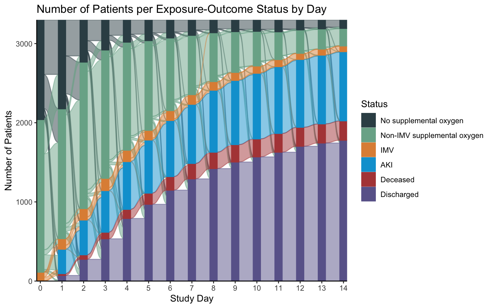

library(tidyverse)
library(ggalluvial)Alluvial plots, or Sankey diagrams, can be used to show the movement of individual units across a single variable, such as time. This post will first explain how to use the ggalluvial R package with a straightforward use-case: showing how an illness severity score changes in a population of critically ill patients by day.
Then, we will use the same package and ideas to walk through how to show data we typically use for survival analyses in an alluvial chart. I’ll use ggalluvial to show the movement of:
- categorical, time-varying exposure
- time-to-event outcome
- competing event
- loss to follow up
over time. These plots can be organized to look similar to Kaplan Meier plots.
Step 0: Load the data
sofa_wide <- read_csv(here::here("blog/alluvial/pseudo_sofa_khstats.csv")) |>
mutate(across(starts_with("day"), ~factor(.x, levels=c("Deceased", 0:4,"Missing","Discharged"))))The data structure we will use for each alluvial plot is wide format, i.e. one row per unit, and one column per time period.
The sofa_wide data set shows this wide format data with one row for each of the six SOFA subscore per patient. We will subset this data for now to one subscore, the pulmonary SOFA score, and use this data to make our first plot.
sofa_pulm <- sofa_wide |> filter(score_type == "pulmonary_sofa")
head(sofa_pulm)# A tibble: 6 × 6
id score_type day0 day1 day2 day3
<dbl> <chr> <fct> <fct> <fct> <fct>
1 1 pulmonary_sofa 0 0 0 0
2 2 pulmonary_sofa 0 1 Missing Missing
3 3 pulmonary_sofa 0 0 0 0
4 4 pulmonary_sofa 0 2 0 0
5 5 pulmonary_sofa 0 1 1 0
6 6 pulmonary_sofa 0 2 2 2 glimpse(sofa_pulm)Rows: 100
Columns: 6
$ id <dbl> 1, 2, 3, 4, 5, 6, 7, 8, 9, 10, 11, 12, 13, 14, 15, 16, 17, …
$ score_type <chr> "pulmonary_sofa", "pulmonary_sofa", "pulmonary_sofa", "pulm…
$ day0 <fct> 0, 0, 0, 0, 0, 0, 0, 0, 0, 0, 1, 0, 0, 0, 0, 0, 1, 0, 0, 0,…
$ day1 <fct> 0, 1, 0, 2, 1, 2, 0, 1, 2, 0, 2, 0, 2, 0, 0, 1, 2, 1, 0, 0,…
$ day2 <fct> 0, Missing, 0, 0, 1, 2, 0, 0, 2, 0, 2, 1, Missing, 0, 0, 0,…
$ day3 <fct> 0, Missing, 0, 0, 0, 2, 0, 0, 1, 0, 2, 1, Missing, 0, Disch…glimpse(sofa_wide)Rows: 600
Columns: 6
$ id <dbl> 1, 1, 1, 1, 1, 1, 2, 2, 2, 2, 2, 2, 3, 3, 3, 3, 3, 3, 4, 4,…
$ score_type <chr> "pulmonary_sofa", "coagulation_sofa", "neurologic_sofa", "h…
$ day0 <fct> 0, 0, 0, 0, 0, 0, 0, 0, 0, 0, 0, 0, 0, 0, 0, 0, 0, 0, 0, 0,…
$ day1 <fct> 0, 2, 0, 0, 0, 1, 1, 0, 0, 0, 1, 0, 0, 1, 0, 1, 1, 0, 2, 2,…
$ day2 <fct> 0, 2, 0, 0, 0, 1, Missing, 0, 0, 0, 1, 0, 0, 2, 0, 0, 0, 0,…
$ day3 <fct> 0, 1, 0, 0, 0, 0, Missing, 0, 0, 0, 0, 0, 0, 1, 0, 0, 0, 0,…head(sofa_wide)# A tibble: 6 × 6
id score_type day0 day1 day2 day3
<dbl> <chr> <fct> <fct> <fct> <fct>
1 1 pulmonary_sofa 0 0 0 0
2 1 coagulation_sofa 0 2 2 1
3 1 neurologic_sofa 0 0 0 0
4 1 hepatic_sofa 0 0 0 0
5 1 cardiovascular_sofa 0 0 0 0
6 1 renal_sofa 0 1 1 0 Step 2
sofa_wide |>
filter(score_type == subscore) |>
group_by(day0, day1, day2, day3) |>
count(.drop = F) # A tibble: 32 × 5
# Groups: day0, day1, day2, day3 [32]
day0 day1 day2 day3 n
<fct> <fct> <fct> <fct> <int>
1 0 0 0 0 45
2 0 0 0 1 1
3 0 0 0 Discharged 7
4 0 0 1 0 1
5 0 0 1 1 2
6 0 0 Discharged Discharged 1
7 0 1 0 0 7
8 0 1 0 1 1
9 0 1 1 0 3
10 0 1 1 1 2
# … with 22 more rowsStep 3
sofa_wide |>
filter(score_type == subscore) |>
group_by(day0, day1, day2, day3) |>
count(.drop = F) |>
ungroup() |>
to_lodes_form(key = "day", axes = 1:4)# A tibble: 128 × 4
n alluvium day stratum
<int> <int> <fct> <fct>
1 45 1 day0 0
2 1 2 day0 0
3 7 3 day0 0
4 1 4 day0 0
5 2 5 day0 0
6 1 6 day0 0
7 7 7 day0 0
8 1 8 day0 0
9 3 9 day0 0
10 2 10 day0 0
# … with 118 more rowssofa_wide |>
filter(score_type == subscore) |>
group_by(day0, day1, day2, day3) |>
count(.drop = F) |>
ungroup() |>
to_lodes_form(key = "day", axes = 1:4) |>
mutate(day = case_when(day == "day0" ~ "B",
TRUE ~ as.character(parse_number(as.character(day)))),
day = fct_relevel(day, "B"))# A tibble: 128 × 4
n alluvium day stratum
<int> <int> <fct> <fct>
1 45 1 B 0
2 1 2 B 0
3 7 3 B 0
4 1 4 B 0
5 2 5 B 0
6 1 6 B 0
7 7 7 B 0
8 1 8 B 0
9 3 9 B 0
10 2 10 B 0
# … with 118 more rowssofa_alluv <- sofa_wide |>
filter(score_type == subscore) |>
group_by(day0, day1, day2, day3) |>
count(.drop = F) |>
ungroup() |>
to_lodes_form(key = "day", axes = 1:4) |>
mutate(day = case_when(day == "day0" ~ "B",
TRUE ~ as.character(parse_number(as.character(day)))),
day = fct_relevel(day, "B"))p <-
sofa_alluv |>
ggplot(aes(x = day,
y = n,
stratum = stratum,
alluvium = alluvium,
fill = stratum))
p
p <- p + geom_flow()
p
p <- p + geom_stratum()
p
p <- p + theme_classic()
pp <- p + coord_cartesian(xlim = c(.5,4.5),
ylim = c(0,100),
expand=F)
p
p <- p +
labs(x = "Day",
y = "Count",
fill = "Subscore",
title = paste0(snakecase::to_title_case(subscore)))
p
my_pal <- ggsci::pal_nejm("default", alpha = 0.6)(8)
p <- p + scale_fill_manual(values = my_pal, drop=F)
p
subscore <- "pulmonary_sofa"
p <- sofa_wide |>
filter(score_type == subscore) |>
group_by(day0, day1, day2, day3) |>
count(.drop = F) |>
ungroup() |>
to_lodes_form(key = "day", axes = 1:4) |>
mutate(day = case_when(day == "day0" ~ "B",
TRUE ~ as.character(parse_number(as.character(day)))),
day = fct_relevel(day, "B")) |>
ggplot(aes(x = day, y = n,
stratum = stratum,
alluvium = alluvium,
fill = stratum)) +
geom_flow() +
geom_stratum() +
theme_classic() +
scale_x_discrete(expand = c(0.1,0.1)) +
scale_fill_manual(values = my_pal, drop=F) +
labs(x = "Day", y = "Count",
fill = "Subscore", title = paste0(snakecase::to_title_case(subscore)))
p
sofa_trend_alluvial <- function(df, subscore){
df |>
filter(score_type == subscore) |>
group_by(day0, day1, day2, day3) |>
count(.drop = F) |>
ungroup() |>
to_lodes_form(key = "day", axes = 1:4) |>
mutate(day = case_when(day == "day0" ~ "B",
TRUE ~ as.character(parse_number(as.character(day)))),
day = fct_relevel(day, "B")) |>
ggplot(aes(x = day, y = n,
stratum = stratum,
alluvium = alluvium,
fill = stratum)) +
geom_flow() +
geom_stratum() +
theme_classic() +
scale_x_discrete(expand = c(0.1,0.1)) +
scale_fill_manual(values = my_pal, drop=F) +
labs(x = "Day", y = "Count",
fill = "Subscore", title = paste0(snakecase::to_title_case(str_remove(subscore,"_sofa"))))
}